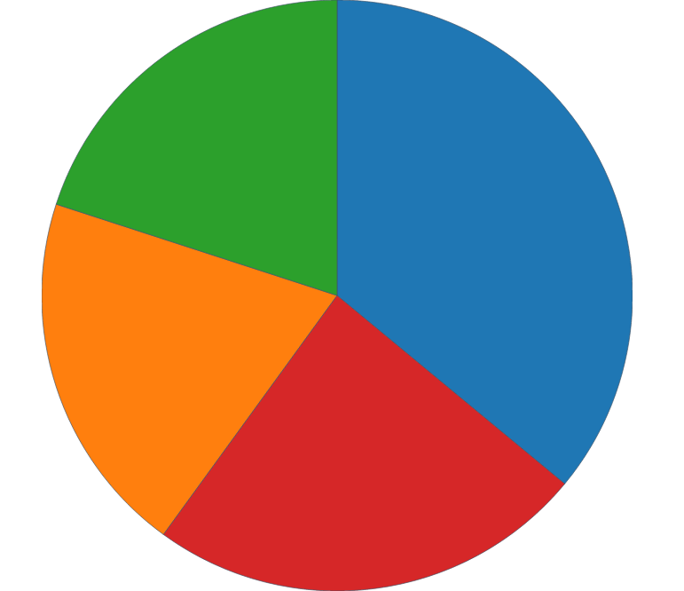
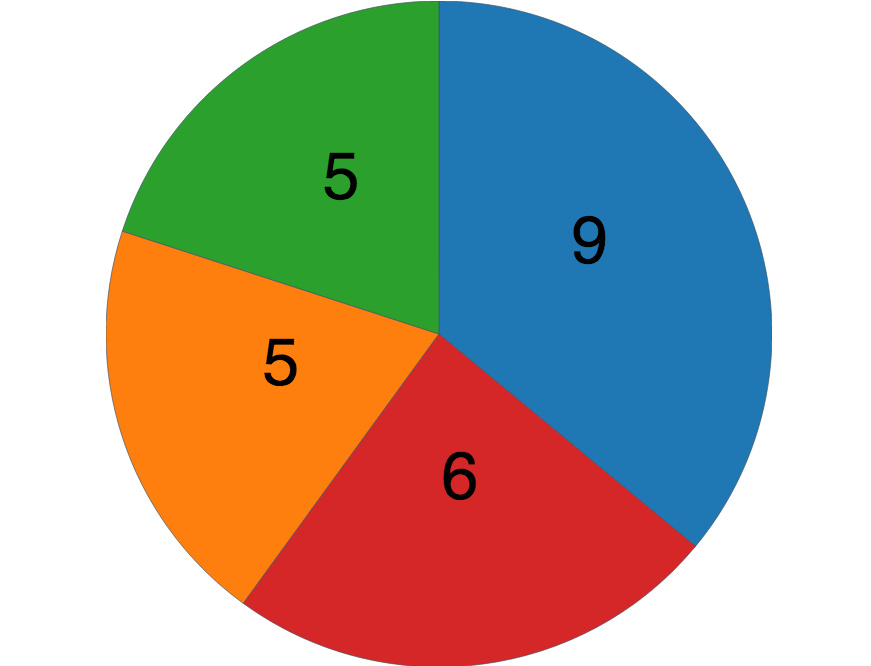
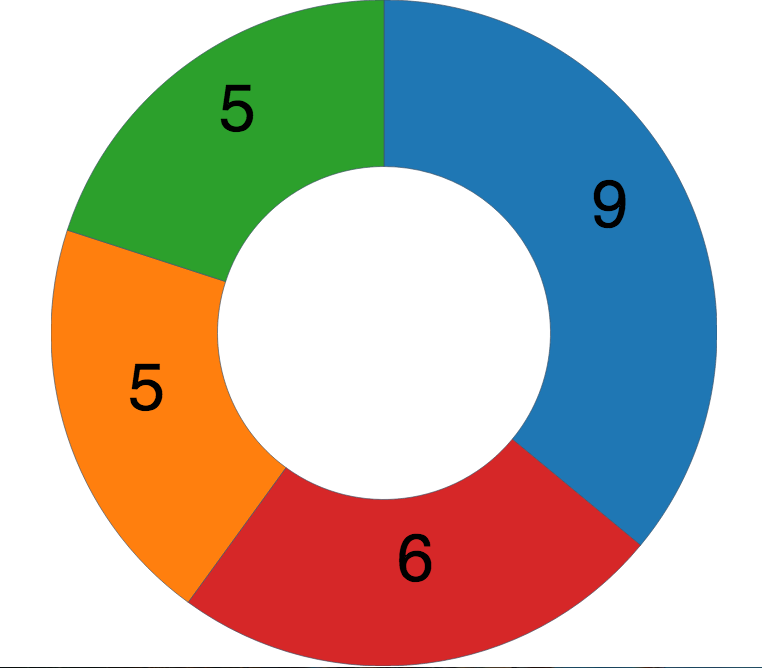

class: center, middle, inverse # D3 Lightning Talk <h3> Abby Greenbloom</h3> .footnote[ created with [remark](http://github.com/gnab/remark) ] --- class: middle, center # What is D3.js? <h3>Javascript Library</h3> ```javascript <script src="http://d3js.org/d3.v3.min.js" charset="utf-8"></script> ``` <h3>Helpful Resources</h3> .svg[ <p>d3js.org</p> <p>https://github.com/mbostock/d3/wiki/Tutorials</p> <p>http://alignedleft.com/tutorials</p> ] --- class: middle # Getting started ```javascript var dataset = [ 9,5,5,6 ]; ... var pie = d3.layout.pie(); ... var width = 500, height = 500; ... var outerRadius = w / 2; var innerRadius = 0; var arc = d3.svg.arc() .innerRadius(innerRadius) .outerRadius(outerRadius); ... ``` ```javascript <path d="M9.184850993605149e-15,-150A150,150 0 0,1 83.99621792063931,124.27644738657631L0,0Z"></path> ``` --- class: middle # Creating the SVG Element ```javascript var svg = d3.select("#pie") .append("svg") .attr("width", width) .attr("height", height); ... ``` --- class: middle # Binding Data ```javascript var arcs = svg.selectAll("g.arc") .data(pie(dataset)) .enter() .append("g") .attr("class", "arc") .attr("transform", "translate(" + outerRadius + "," + outerRadius + ")"); ``` --- # Drawing Arcs ```javascript arcs.append("path") .attr("fill", function(d, i) { return color(i); }) .attr("d", arc); ``` Adding Colour ```javascript var color = d3.scale.category10(); ``` .center[] --- class: middle # Adding Text ```javascript arcs.append("text") .attr("transform", function(d) { return "translate(" + arc.centroid(d) + ")"; }) .attr("text-anchor", "middle") .attr("font-size", "100px") .text(function(d) { return d.value; }); ``` .center[] --- class: middle # Creating a Donut ```javascript var outerRadius = w / 2; var innerRadius = 0; <!-- Create the Donut by changing the innerRadius --> var innerRadius = w / 4; ``` .center[] --- class: middle # MAP TIME Getting the JSON data ```json ... { "type": "FeatureCollection", "features": [ { "type": "Feature", "properties": { "id": 1, "HOOD": "ETOBICOKE NORTH ", "FULLHOOD": "ETOBICOKE NORTH (1)" }, "geometry": { "type": "Polygon", "coordinates": [[[-79.63149133657957,43.73754566219574],[-79.633229673188,43.74052722981641], [-79.63413394797819,43.742086263240466],[-79.63566593441776,43.74463213305962], [-79.63603328117308,43.745299247603626],[-79.63664292722163,43.74649577781994] ... ]] } }, ... ``` --- class: middle # Set up the Map ```javascript var width = 1230, height = 1160; ``` ```javascript var path = d3.geo.path() ``` --- class: middle # Binding GeoJson to Path ```javascript d3.json("toronto.geojson", function(error, json) { if (error) return console.log(error) svg.selectAll("path") .data(json.features) .enter() .append("path") .attr("d", path); }); ``` ---  --- class: middle # Projections ```javascript var projection = d3.geo.mercator() .scale(120555) .center([-79.45318304409768,43.74080098090873]) .translate([height / 2, width / 2]); ``` ```javascript var path = d3.geo.path() .projection(projection); ``` ---  --- class: middle # Adding CSV file ```javascript queue() .defer(d3.json, "world.geojson") .defer(d3.csv, "cities.csv") .await(map) ``` # CSV File ```javascript value,vote,Counsillor Name,HOOD,id .05,no,Vincent Crisanti,ETOBICOKE NORTH,1 .05,no,Rob Ford,ETOBICOKE NORTH,2 1.00,yes,Stephen Holyday,Etobicoke Center,3 1.00,yes,John Campbell,Etobicoke Center,4 1.00,yes,Justin J. Di Ciano,ETOBICOKE-LAKESHORE,5 .05,no,Mark Grimes,ETOBICOKE-LAKESHORE,6 .05,no,Giorgio Mammoliti,YORK WEST,7 .05,no,Anthony Perruzza,YORK WEST,8 1.00,yes,Maria Augimeri,YORK CENTRE,9 ... ``` --- class: middle # Binding and Looping Through the Data ```javascript for (var i = 0; i < data.length; i++) { var dataID = data[i].id; var uberVote = data[i].vote; var dataValue = parseFloat(data[i].value); for (var j = 0; j < json.features.length; j++) { var jsonID = json.features[j].properties.id; if (dataID == jsonID) { json.features[j].properties.value = dataValue; break; } } } ``` --- class: middle # Setting up Choropleth Map ```javascript var color = d3.scale.quantize() .range(["rgb(237,248,233)","rgb(186,228,179)","rgb(116,196,118)"]); ``` ```javascript var svg = d3.select("#toronto") ... color.domain([ d3.min(data, function(d) { return d.value; }), d3.max(data, function(d) { return d.value; }) ]); ... ``` --- class: middle # Re-drawing the map ```javascript ... svg.selectAll("path") .data(json.features) .enter() .append("path") .attr("d", path) .style("fill", function(d) { var value = d.properties.value; if (value) { return color(value); } else { return "#ccc"; } }); ``` ---  --- class: middle, center # What else does D3.js do??? http://bl.ocks.org/ --- class: middle, center # Contact Me <h4>.center[agreenbloom.github.io]</h4> <h4>.center[@agreenbloom]</h4> <h4>.center[abby.greenbloom@gmail.com]</h4> <h4>.center[github.com/agreenbloom]</h4> <h4>.center[ https://ca.linkedin.com/in/abbygreenbloom]</h4>